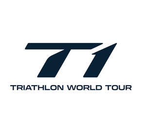

Trade Mark Journal No.2025/016 18 April 2025
UK00004179692 26 March 2025 (9,16,18,25,35,41)

- Class 9
- Wetsuits; Headphone-microphone combinations; Headphones; On- board computers; Portable computers; Wearable computers; Video recordings; Video game programs; Interactive video software; Computer game programs; Software applications for use on mobile devices; Games software; Pre-recorded videos; Discs (Compact -) [audio-video]; DVDs; Optical data media; Electronic speed recorders; Mileage recorders for vehicles; Kilometre recorders; Electronic temperature recorders, other than for medical use; Electronic carbon dioxide recorders [other than for medical purposes]; Wind measurement apparatus; Advertising signboards [luminous]; Advertising signboards [mechanical]; Advertising boards [mechanical or luminous]; Advertising display signs [mechanical or luminous]; Podcasts; Downloadable publications; Downloadable graphics for mobile phones; Film recordings; Bags, cases and covers specially adapted for holding or carrying mobile telephones, tablets and their accessories; Laptop bags; Mobile phone accessories; Binoculars; Mouth guards; Cases for holding mouth guards.
- Class 16
- Printed matter; Books; Printed publications; Magazines; Journals; Calendars; Diaries; Guides; Guidebooks; Books; Newspapers; Advertising materials; Promotional materials; Posters; Handbooks [manuals]; Autograph books; Greeting cards; Photographs; Photograph albums; Stationery; Notepaper folders; Paperweights; Access Passes; Passport holders.
- Class 18
- Trunks and travelling bags; Umbrellas, parasols and beach umbrellas; Backpacks; Bags; Bags for travel; Beach bags; Garment bags for travel; Gym bags; Handbags; Rucksacks; Satchels; School bags; Shopping bags; Sport and leisure bags; Toiletry bags; Tote bags; Travelling bags; Belts [leather shoulder -]; Leather wallets; Briefcases; Business card cases; Credit card holders; Key cases [leatherware]; Luggage tags; Travel and grooming cases.
- Class 25
- Clothing; Triathlon clothing; Sportswear; Athletic wear; Exercise wear; Triathlon training and racing apparel; Clothing for cycling; Clothing for running; Clothing for swimming; Warm up suits; Track suits; Sweat pants and sweat shirts; Sweaters; Sweatshirts; Jumpers; Jerseys; Bodysuits; Tops; Shirts; Trisuits; T-shirts; Singlets; Running tops; Vests; Rash vests; swimwear; swimming and racing suits; briefs; bathing suits; suits; trousers; pants; jeans; Shorts; Skirts; Coats; Dresses; Jackets; Rain jackets and outer clothing; Underclothing; Sleepwear; Headgear; Hats; Caps; Headbands; Visors; Footwear; Sports shoes; Cycling shoes; Running shoes; Socks; Wrist bands; Scarves; Gloves; Ties.
- Class 35
- Administration of membership schemes; Marketing and promotion of sporting and recreational activities and events including triathlons; Business administration of sporting and recreational activities, including triathlons; Retail and wholesale services relating to sporting goods and clothing for use in triathlons; Advertising, marketing, business management and office functions; Arranging sponsorships; Advertising, including promotion of products and services of third parties through sponsoring arrangements and licence agreements relating to international sports' events; Business management of sport personalities; Agency services for promoting sport personalities; Administration and management of sporting and recreational activities and events including triathlons; Producing promotional videotapes, video discs, and audio visual recordings; Production of sound recordings for marketing purposes; Arranging of presentations for advertising purposes; Arranging of competitions for advertising purposes; Assistance to management in commercial enterprises in respect of advertising; Management advice; Commercial business management; Business management of sporting venues [for others]; Business management of sporting facilities [for others]; Publicity services; Agency services for arranging business introductions; Negotiation and conclusion of commercial transactions for third parties; Arranging of collective buying; Commercial administration of the licensing of goods and services of others; Consultancy and information services in relation to the aforementioned services.
- Class 41
- Sporting services; Arranging and conducting athletic competitions, races and activities consisting of running, swimming and biking; Conducting triathlons; Organising of sporting events, competitions and sporting tournaments; Event management services being organisation of educational, entertainment, sporting or cultural events; Provision and management of sporting events; Provision and management of education and training events; Sports education and training services; Timing of sports events; Production of sporting events; Production of television, radio and video programs and on-line information relating to sporting events including triathlons; Instruction in sporting activities; Provision of sporting facilities; Entertainment, sporting and cultural activities; Publication of printed matter and electronic media regarding sporting events including triathlons; Providing information, including online, regarding sporting and recreational activities and events including triathlons; Ticket information services for sporting events; Sound recording and video entertainment services; Production of video and/or sound recordings; Editing or recording of sounds and images; Rental of motion pictures and of sound recordings; Production of entertainment in the form of sound recordings; Video editing; Video game entertainment services; Providing on-line videos, not downloadable; Arranging of seminars relating to advertising; Arranging of conferences relating to advertising; Training courses in strategic planning relating to advertising, promotion, marketing and business; Seminars; Conference services; Betting services; Hospitality services (entertainment); Providing online electronic publications; Provision of information relating to sport online from a computer database on the Internet; Internet games (non downloadable); Production of television programmes; Providing data for educational or entertainment purposes and in connection with sporting and cultural activities; Electronic games services provided on line by means of the internet; Interactive internet and television games and gaming; Provision of non-downloadable games on the Internet; Internet gaming services; information, advisory and consultancy services relating to all of the aforesaid services.
PTO Commercial Limited
Representative: Hamlins LLP